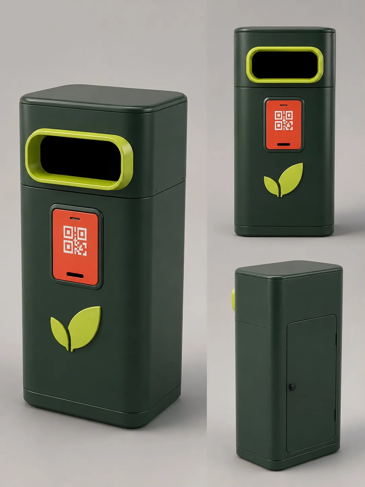
ECO2LOCAL
ถังขยะอัจฉริยะ คู่กับเว็บไซต์ AI ดูแลสวนธนบุรีรมย์
อันดับ 34 จาก 515 ทีม
3 รูป · เกียรติบัตร · โปสเตอร์

ถังขยะอัจฉริยะ คู่กับเว็บไซต์ AI ดูแลสวนธนบุรีรมย์
อันดับ 34 จาก 515 ทีม

ทุ่นลอยน้ำสร้างกระแสไฟฟ้า ที่มี Piezoelectric เป็นพระเอก
มจธ. · 6 ก.ย. 2568

ทุ่นลอยน้ำสร้างกระแสไฟฟ้า ที่ผมเขียนโค้ด Arduino และประกอบชิ้นงาน
โรงเรียนวัดพุทธบูชา · 22 ส.ค. 2568
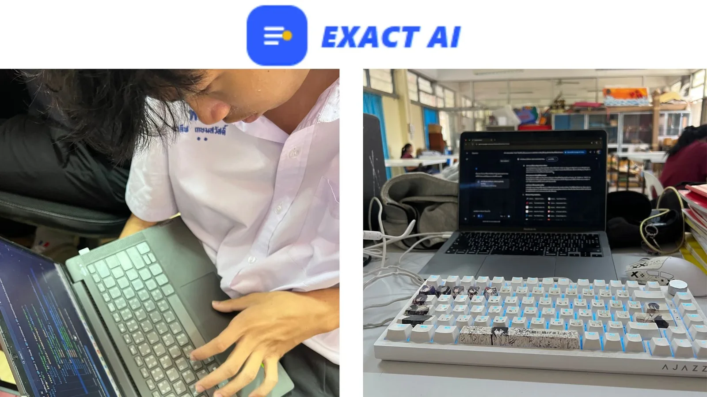
โมเดลการเรียนรู้ 5 ขั้น บนเว็บไซต์ที่พวกเราสร้างเอง
จุฬาฯ · CEDT Hackathon 2026
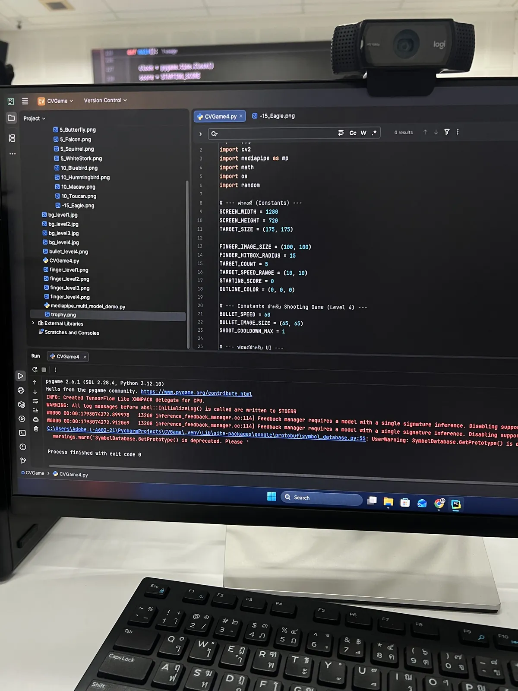
ใช้ Library MediaPipe ตรวจจับร่างกายผ่าน Webcam แล้วสร้างเกม 2D
สถาบันไทย-ญี่ปุ่น · 27 ต.ค. 2569
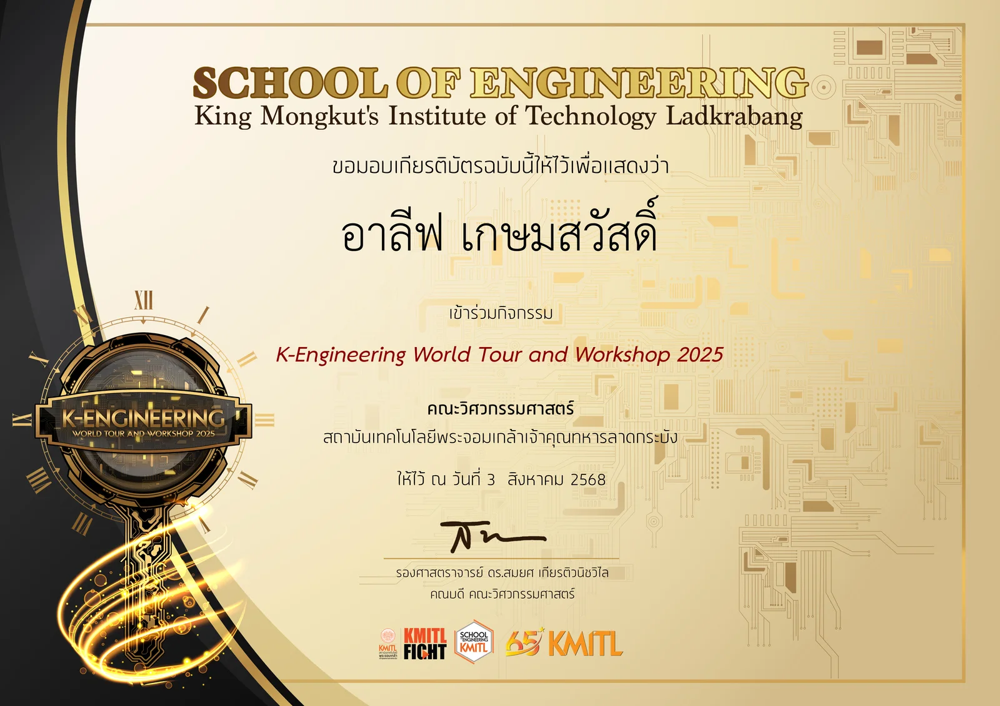
คณะวิศวกรรมศาสตร์ สจล.
สจล. · 3 ส.ค. 2568
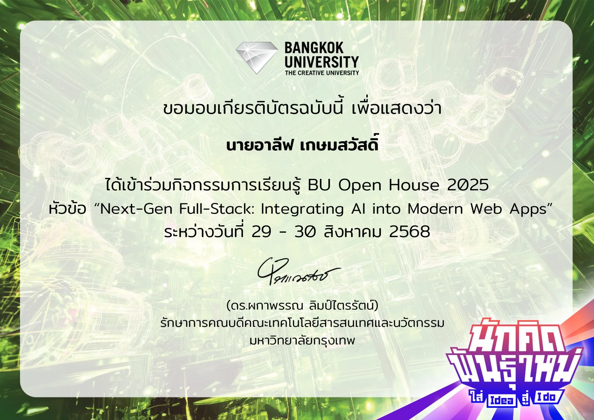
BU Open House 2025 · มหาวิทยาลัยกรุงเทพ
ม.กรุงเทพ · 29–30 ส.ค. 2568
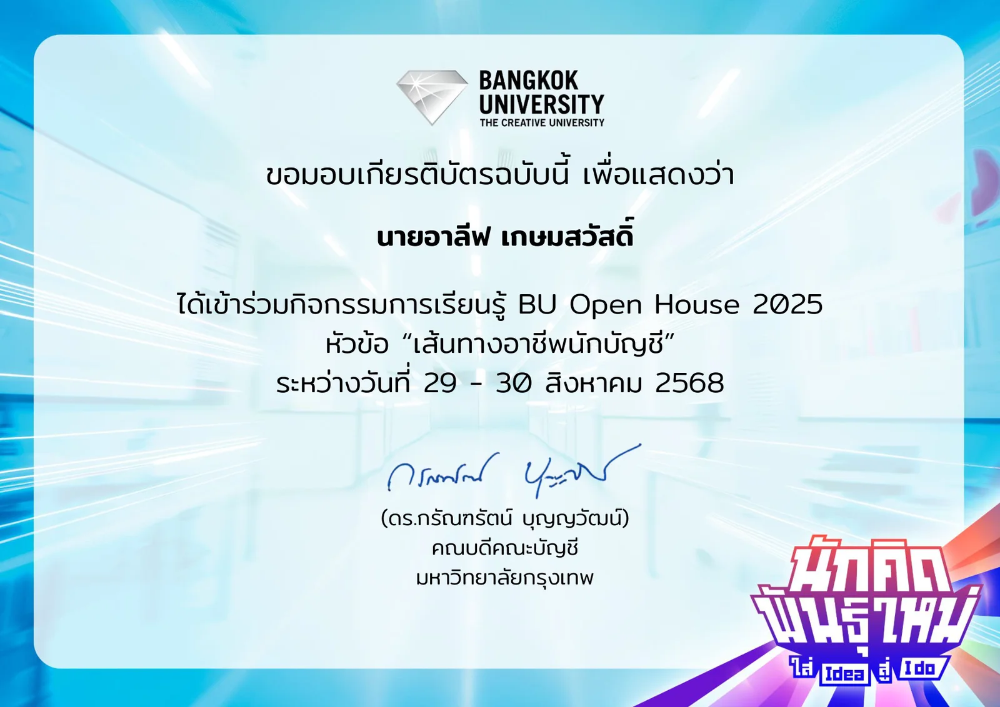
BU Open House 2025 · มหาวิทยาลัยกรุงเทพ
ม.กรุงเทพ · 29–30 ส.ค. 2568
ใช้ Library MediaPipe ตรวจจับร่างกายผ่าน Webcam แล้วสร้างเกม 2D
สถาบันไทย-ญี่ปุ่น · 27 ต.ค. 2569
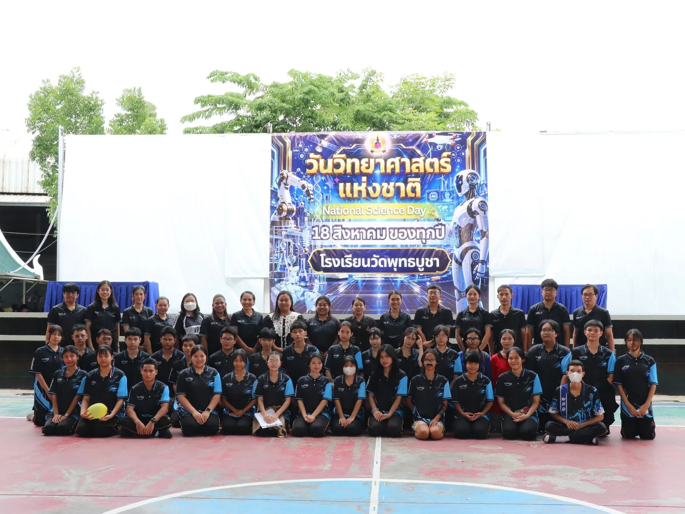
รับผิดชอบด้าน Soundboard ในการแสดงของกลุ่ม
โรงเรียนวัดพุทธบูชา · 18 ส.ค. 2569
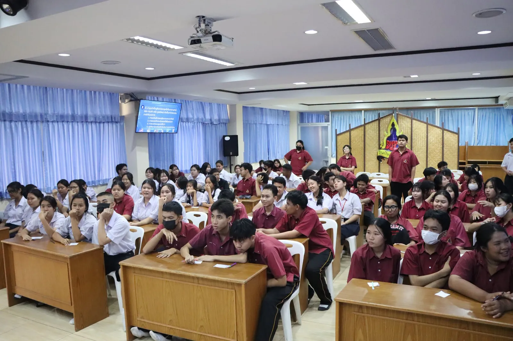
ร่วมแข่งกับเพื่อนตลอด 3 ปี ตั้งแต่ ม.4 ถึง ม.6
โรงเรียนวัดพุทธบูชา · 2567–2569
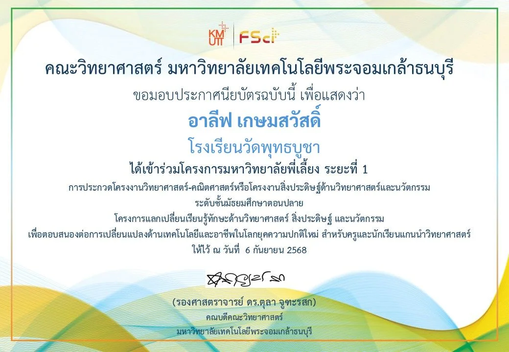
คณะวิทยาศาสตร์ มจธ.
มจธ. · 6 ก.ย. 2568
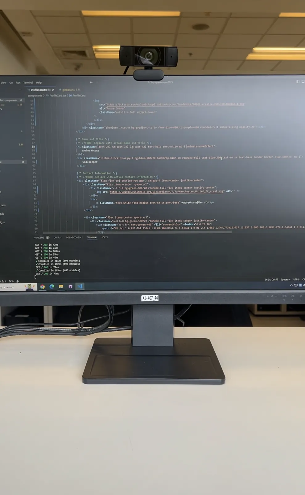
สัมผัสบรรยากาศมหาวิทยาลัย เข้า Workshop ของ IT และเยี่ยมชมคณะการบัญชี
ม.กรุงเทพ · 30 ส.ค. 2568
ทุ่นลอยน้ำสร้างกระแสไฟฟ้า ที่ผมเขียนโค้ด Arduino และประกอบชิ้นงาน
โรงเรียนวัดพุทธบูชา · 22 ส.ค. 2568
สัมผัสบรรยากาศวิศวะ และเข้า Workshop วิศวกรรมซอฟต์แวร์
สจล. · 3 ส.ค. 2568
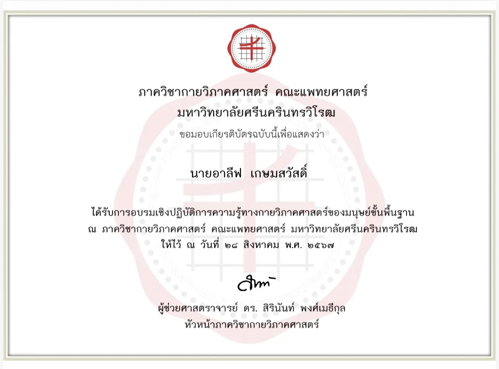
ภาควิชากายวิภาคศาสตร์ คณะแพทยศาสตร์ มศว.
มศว. · 28 ส.ค. 2567
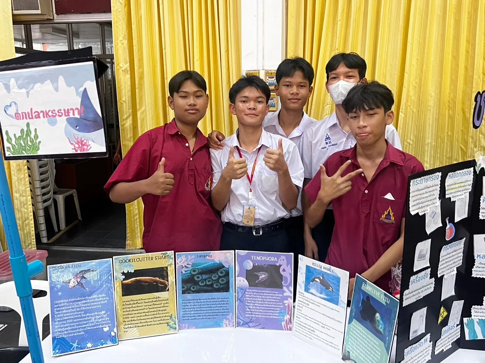
ช่วยเพื่อนสร้างเกมประจำวันวิทยาศาสตร์ หัวข้อวิชาชีววิทยา
โรงเรียนวัดพุทธบูชา · 16 ส.ค. 2567
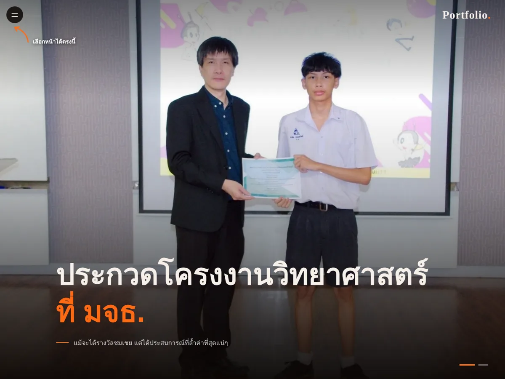
เว็บที่คุณกำลังดูอยู่ เขียนด้วย HTML, CSS และ JavaScript ล้วน ร่วมกับ Claude Code
HTML · CSS · JavaScript